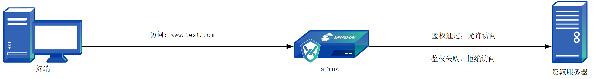
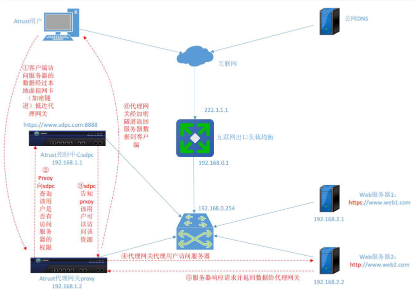
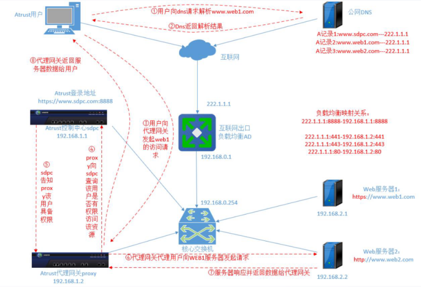

aTrust资源发布概述
aTrust资源发布
资源发布概述
零信任保护的是访问主体（终端）到访问客体（业务服务器）过程中的安全。资源是零信任定义的可被访问的业务服务器，只有在零信任上发布并授权给用户的业务服务器地址，终端才能通过零信任访问成功。

| aTrust资源类型 | 支持的协议 | 适用业务类型 | 适用场景 |
|---|---|---|---|
| 隧道资源(推荐) | TCP, UDP, ICMP | B/S架构、C/S架构业务 | 依赖于零信任客户端，适用于大部分业务场景，如：WEB业务访问、远程运维、远程桌面、samba共享、FTP等； |
| WEB资源 | http/https | B/S架构业务 | 不依赖客户端，可无端访问，仅适用于WEB类的业务；但兼容性差于隧道资源； |
| WEB泛域名资源 | http/https | B/S架构业务 | WEB资源的一种，适用于有大量WEB资源需要发布，但无法收集具体WEB站点的场景；主要应用于高校场景发布知网、万方等图书馆资源； |
| 桌面云资源 | / | 深信服桌面云 | 特殊场景，隧道资源的一种，主要用于aTrust对接深信服桌面云实现零信任与桌面云业务单点登录，用户无感知； |
注：非特殊场景下，推荐使用隧道资源，兼容性最好，Web资源部署实施域名改造工作量大，对于不规范站点兼容性差
隧道资源
- 4层代理技术，支持TCP、UDP、ICMP协议。既可以支持web站点，也可以支持3389（RDP）、samba共享等非web业务系统，相当于传统SSLVPN的L3vpn资源。
- 实现原理其实就类似于套了一个壳（加密隧道），把流量中转了代理网关访问资源，从而实现互联网的PC终端，能够访问到内网IP段的内网业务系统资源。
隧道资源——方案特征
- 兼容性好，可以支持BS、CS应用（如rdp、ssh、samba共享等），支持TCP、UDP、ICMP协议；
- 不需要改造CS应用或BS网站，比如cs app中写死了一个内网IP地址（如192.168.1.1），那么通过隧道资源方式，cs app仍然可以通过192.168.1.1这个内网IP，经过隧道代理，安全访问到原来的业务系统；
访问隧道应用的流量原理

1.客户端访问服务器的数据经过本地虚拟网卡（加密隧道）抵达代理网关
2.Prxoy向sdpc查询该用户是否有访问服务器的权限
3.Sdpc告知Prxoy该用户可以访问该资源
4.代理网关代理用户访问服务器
5.服务器响应请求并返回数据给代理网关
6.代理网关经加密隧道返回服务器数据到客户端
WEB资源
- 只支持http/https的站点，实际上是nginx的https反向代理，可以理解为web网站直接发布，也可以理解为负载均衡的7层代理。
WEB资源——方案特征
- 由于需要互联网访问，需要传输加密，避免明文传输被泄漏。所以需要发布成https的加密站点；
- 同时为了让浏览器信任，避免报“该站点证书不可信”，所以需要让客户采购SSL证书（要花钱，要有域名）带来了部署上的不便利。
- 由于是7层代理，可以识别审计出URL和网页的内容，可以做更多的应用层的控制，如水印、禁止复制/下等；
访问Web应用的流量原理

用户WEB应用访问流量：
- 用户安装客户端已完成认证，用户输入WEB应用域名访问地址；
- WEB应用经过DNS服务器进行解析，并将解析结果返回，域名的A记录解析地址指向代理网关地址；
- 用户向代理网关发起WEB应用的请求；
- 代理网关向控制中心查询该用户是否具备该资源的访问权限；
- 控制中心返回鉴权结果；
- 代理网关收到鉴权结果后，向WEB服务器发起请求；
- 服务器收到请求后，将数据返回给代理网关；
- 代理网关将业务数据返回给用户。
Web应用相关配置
开篇劝退：WEB资源的兼容性比隧道资源差，如无特殊情况，请优先将资源以隧道资源的方式发布。
配置规则如下：
- 业务服务器地址可以为IP或域名
- 应用的访问地址必须为域名，不能为IP
- 授信证书默认选中顺序：相同单域名证书>包含该域名的多域名证书>泛域名证书>包含该域名后缀的泛域名证书的混合域名证书>内置证书
aTrust设备能够基于http和https标准协议，实现免客户端和插件安装，即可访问所有Web资源应用。aTrust采用Web反向代理技术，更好的解决了Web反向代理的URL重写兼容性问题，同时也提供了更好的访问体验，起到收缩互联网暴露面，减少应用系统被攻击的风险，同时又不会改用户访问习惯的效果。
WEB应用支持的功能，具体如下：
- 基础WEB应用发布
- 选择代理模式，支持透明代理和智能改写两种代理方式
- 透明模式：不对网站进行内容改写，适用于较为规范化的业务系统发布。推荐配置方式为前后端访问地址保持一致。
- 智能改写：适用于透明代理不能正常兼容的复杂站点或老旧站点
- 依赖站点–（自动采集工具）：用于解决部分复杂的网页除了入口站点外，在html页面中还镶嵌着许多的依赖子站点场景。
- 注：功能使用前提条件
a. WEB应用的代理模式必须选择智能改写；
b. 必须提供泛域名和泛域名证书（若是使用http协议，可不用提供证书）
- 注：功能使用前提条件
- 私有DNS解析：用于解决在灰度测试阶段不改变用户访问习惯，或客户想使用WEB应用但没有申请域名的景
- 必须安装aTrust客户端才可访问
- 安全设置（web水印，访问控制策略）
- 单点登录：可实现用户登录aTrust后，直接访问业务系统，无需重复输入账号密码即可进行访问。
注：
配置后端访问地址，可为域名或者IP，若为域名则代理网关Proxy必须要能解析（可通过配置hosts解决）
配置前端访问地址，必须为域名，该地址的解析需要解析到代理网关Proxy的地址（无公网DNS可配置私有DNS）
隧道应用配置相关
隧道应用，是基于终端C/S架构应用接入安全制定的一种访问内网资源的方式。零信任aTrust的隧道模式，存在两种协议支持，分别是TCP/UDP协议和HTTP/HTTPS协议。同时不仅支持C/S架构应用的发布，同时也是支持B/S架构应用的发布，具体如下。
隧道模式TCP/UDP协议：
- 支持通过TCP、UDP发布B/S和C/S资源，实现用户登录aTrust后访问；
- 支持通过ICMP发布资源，实现用户登录aTrust后，探测资源的连通性；
- 支持TCP协议优先使用隧道长连，支持在Windows/Mac系统下生效，实现单点通讯/ALG反连场景
隧道模式HTTPS/HTTP协议：
- 支持通过HTTPS/HTTP协议发布B/S资源，实现用户登录aTrust后访问；
- 支持用户访问应用时，日志审计至URL粒度；
- 支持访问应用时，显示用户名等信息的WEB水印；
- 支持HTTP/HTTPS隧道协议的单点登录功能，实现支持登录aTrust后，可单点登录应用；
- 配置应用地址时，支持单个IP、IP范围、IP段及域名，域名支持通配符。
注意：
- TCP协议支持单个IP、IP范围、IP段及域名，域名支持通配符；UDP/ICMP/ALL协议仅支持单个IP、IP范围、IP段，不支持域名
- 选择TCP长链接，配置应用防护策略后，访问不符合策略时会直接阻断，不支持提示语显示和豁免补救
- HTTP/HTTPS协议不支持发布C/S应用；
- 若用户发布的为HTTP协议，授信证书选择内置证书即可，不影响业务的访问。